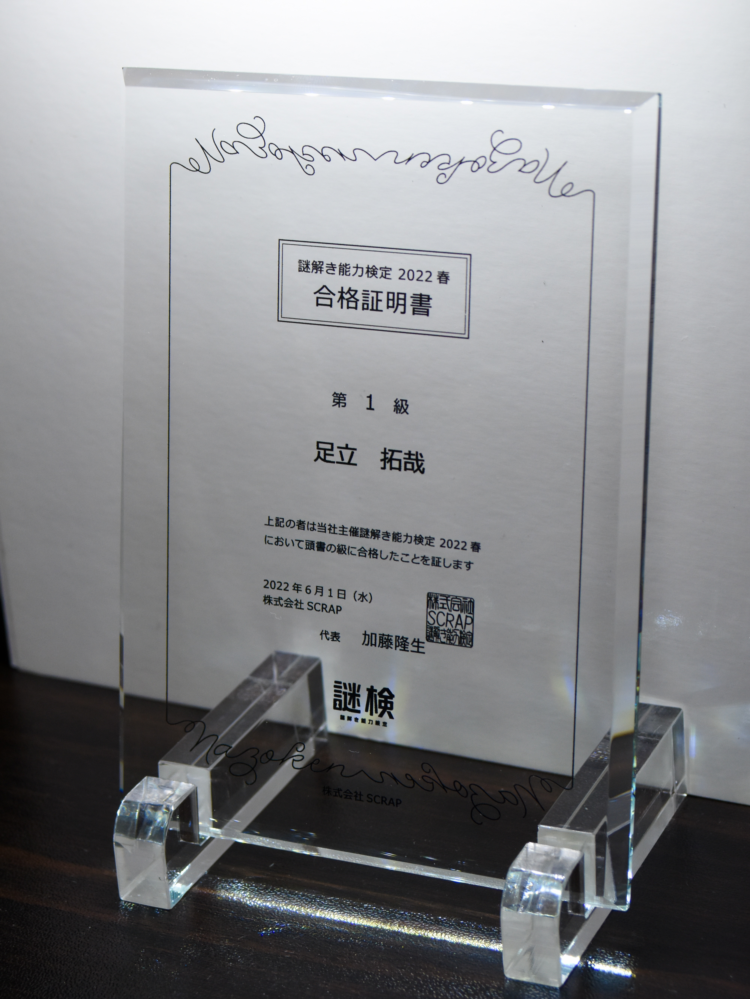
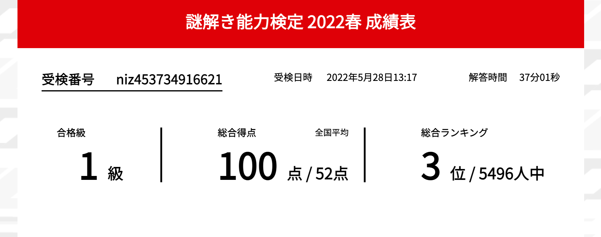

高校１年生のときに偶然みたテレビ番組『高校生クイズ』に憧れてから競技クイズに熱中。謎解きクイズが大好きで高校・大学と没頭していました
東大王 出場
大学１年生の夏、TBS『東大王』で、視聴者からの挑戦枠募集があるということで、腕試しがてら予選に参加してみると通過。予選問題は満点通過とのことでしたが、本番ではステージ１であっさりと敗北。その後のステージではわかる問題も多かったためにかなりもどかしい記憶があります。が、テレビ撮影ってこんな感じで進められるんだと体験できた良い機会でした。

謎解き検定 全国３位
大学３年生、友だちから謎検の存在を教えてもらい参加。満点だと回答時間で順位付けされるらしいです。
